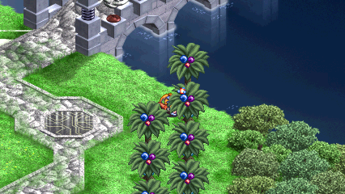
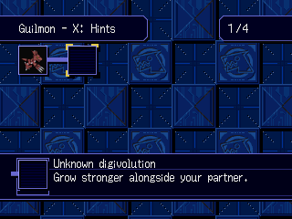
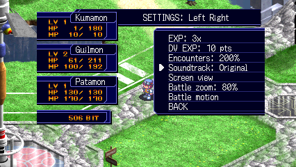
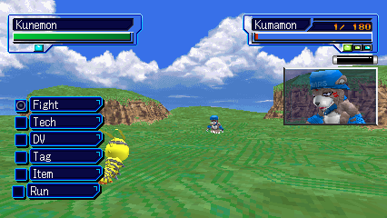

Less CPU time per battle frame
14.13 → 9.69 ms in the tested idle battle, with the optional native geometry unit enabled. Both runs held about 50 updates per second.
DIGIMON WORLD 2003 / WINDOWS PROJECT
Keep the adventure, the discovery, the ridiculously good music. Spend less of it grinding and walking back to the lab.
Experimental fan project · European release · Bring your own disc data

01 / DISCOVER
Open the full Digimon Lab from your menu. Choose battle forms, switch partners and load techniques wherever the adventure takes you.
Locked forms offer a nudge in the right direction. A reason to experiment, without turning every evolution into a spreadsheet.
How the hints work ↗

02 / SET YOUR PACE
Turn normal and DV experience up to 4×. Choose fixed 10-point DV awards. Dial random encounters anywhere from off to double the original rate.
Speed up idle and action poses separately, up to 2×, while the battle camera keeps its own pace. Story fights still happen, and progression caps still apply.
Explore the settings ↗03 / SAME SONG. NEW TEXTURE.
The original score is the starting point. Keep its sound, try a DS-inspired blend, bring in sampled instruments, or give the melody an oscillator-chip character. Switch mid-song from SETTINGS.
Sound starts only when you press play or choose a section.
Alternate palettes use a locally built music pack covering 42 banks. Arrangements and melody balance are still being refined; this excerpt does not represent every track. Effects and unrecognized banks keep their original sound. Per-track listening notes ↗
04 / LESS TIME WAITING
Repeated file setup made the original save routine wait between tiny requests. Shinka groups those requests while keeping sector checks, disk flushes and completion handling. Battle work targets the routines actually consuming CPU time.
14.13 → 9.69 ms in the tested idle battle, with the optional native geometry unit enabled. Both runs held about 50 updates per second.
25.02 → 6.11 seconds to the last observed data sector. The loaded body matched the original byte for byte.
28.72 → 7.63 seconds to the last observed file-sector write. A controlled replay produced an identical full memory card.
Short, matched local tests; not a full-game benchmark. Card timings exclude confirmation input and are not total menu-to-world waits. Battle measurements ↗ · Save measurements and checks ↗

05 / ROOM TO EXPLORE
Independent battle and field aspect ratios, plus battle zoom. Field widescreen draws extra preloaded scenery, with map edges and object visibility still under investigation.
Press X on supported, visited icons to travel through the original area loader. Eleven Asuka-server stops are covered so far, with checks for the story scenes audited around them.
Minimizing suspends offline gameplay; restoring resumes it. A default-off debug history buffer also avoids a 128 MiB allocation. Ordinary focus changes keep the game running.
06 / STILL EVOLVING
Shinka is an experimental Windows project combining locally translated game code with a PSX runtime and interpreter fallback. It is playable in tested areas; it is still a long way from complete campaign coverage.
Follow the Windows build guide with your own supported disc dump and the required build tools. There is no standalone game download here. Existing DuckStation cards can be copied into a separate save profile.
Later-game compatibility, additional safe travel destinations, field widescreen coverage, soundtrack balance and long movie playback. Higher-resolution combat models remain an offline research prototype. Controller testing does not yet cover every device.
Public checks exercise the Python tooling with synthetic data. Native regression suites and recorded gameplay checks provide separate evidence. Neither a green badge nor a working checkpoint establishes full-game compatibility. Read the testing guide.